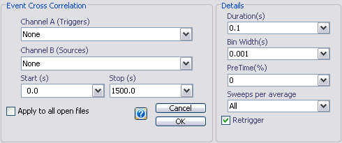
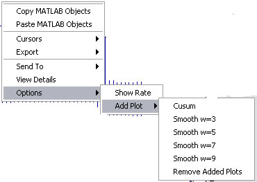

Event crosscorrelation
Email: sigtool@kcl.ac.uk

Email: sigtool@kcl.ac.uk
Author: Malcolm Lidierth
Updated: June 2008
Event crosscorrelation provides an estimate of the probabilty of observing an event as a function of time following a trigger event on the same or a different channel. By default, results are returned as events/sweeps (i.e. probability) but can subsequently be re-scaled to events/second (i.e rate).

Select the trigger channels in the Channel A selector and source channels using the Channel B selector. Any channels with multiple events can be selected.
Sets the timebase for the resulting event crosscorrelations and the bin width to use (in seconds)
Sets the pre-time as a percentage of the duration.
By default, all triggers will be used. To generate multiple correlations each with a fixed number of sweeps set Sweeps per Average to a number less than the total number of available triggers. The result will be presented as a 3-D histogram.
The Retrigger checkbox is selected by default: triggers that fall during a preceding sweep will be used to trigger a subsequent sweep.
Unchecking the Retrigger box will cause triggers that fall before the end of a preceding sweep to be ignored (this option is more typically used with post-event time histograms).
Right-click the mouse on the plotted result to display a context-senstive menu. Menu options include the ability to toggle between plotting events/sweep and event rate, to superimpose a cumulative sum (cusum) plot and to add a smoothed plot of the data (smoothed with a Gaussian with a width of w bins).

© The Author and King's College London, 2008-